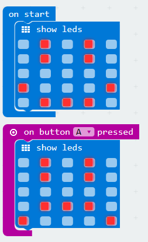

Micro:bit PXT - Beginner
Lesson 05 - Magic Logo
Intro
In this lesson, you will learn how to use the accelerometer to detect movement of the micro:bit in physical space, to create the project shown in the video below:
Upon power-up, the micro:bit will display a happy face. When the button A is pressed, the display will change to a sad face.
Learn It
Source: How a Smartphone Knows Up from Down (accelerometer), engineerguy, YouTube (https://www.youtube.com/watch?v=KZVgKu6v808)
Code It
- Replicate the following code in the PXT editor: 
Save It
- Download your code into the directory setup in the previous lesson, and call the file:
microbit-lesson05a.hex
Test It
- Flash the code file onto the micro:bit.
- The micro:bit should behave as shown in the first video.
- Did your code work? If so, well done! If not, look through the code to find any mistakes. You can find a code listing above.
- Now move on to the challenges...
Challenges
- Challenge 1:
- Add a new listener for button B to your code, so that when button B is pressed, the screen displays a happy face again.
- Save your code with the following filename:
microbit-lesson03b.hex
Finish
Congratulations! You have now completed lesson 4. Go back to the Beginner index, and move on to the next lesson.